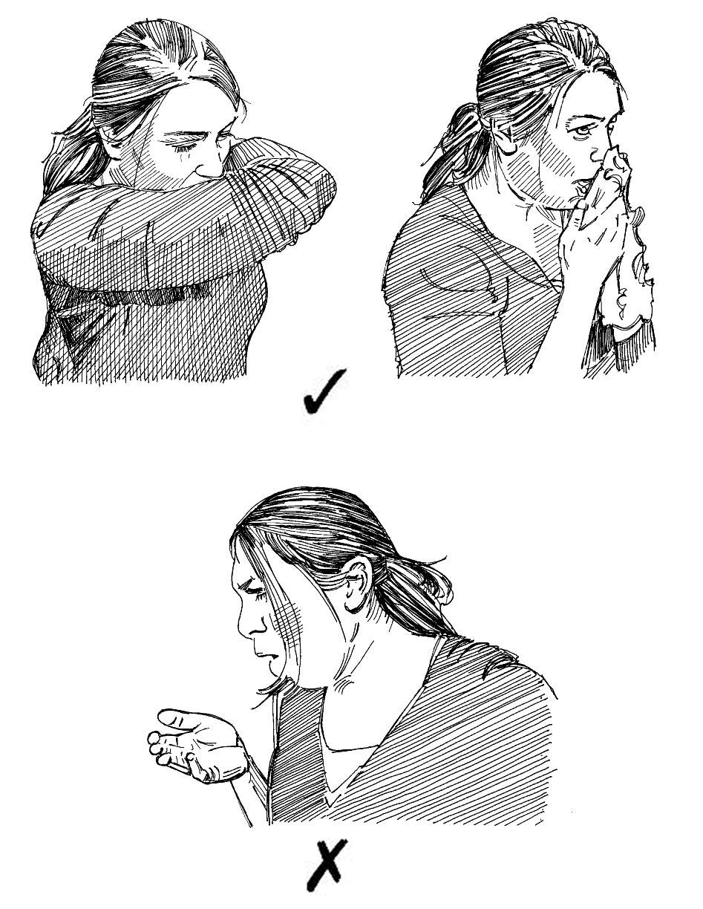

Il n’est ni agréable ni sain de tousser au visage des autres.
La toux peut être une source de transmission des maladies dont les germes sont véhiculés par
des gouttelettes ou diffusés dans l’air.
Il est important d’apprendre à tousser correctement (connaître les bons usages en cas de
toux) car cela constitue un comportement plus agréable pour votre entourage et empêche la propagation de la maladie.
Pourquoi apprendre les bons usages en cas de toux ?
Certaines maladies peuvent se transmettre d’une personne à l’autre dans les gouttelettes de salive ou de mucosités ou par voie aérienne.
Cela signi e que lorsque nous toussons, nous pouvons transmettre des maladies à d’autres personnes.
Pour éviter cela, nous devons apprendre à tousser conformément aux recommandations, a n de ne pas répandre de germes.
CE QU’IL FAUT FAIRE et CE QU’IL NE FAUT PAS FAIRE
Beaucoup de gens toussent dans leur main pour éviter que les germes se répandent. Ce
n’est pas une bonne pratique car après avoir toussé dans votre main, vous pouvez toujours transmettre les germes en touchant des objets ou en serrant la main des gens. Ne toussez pas dans votre main.
La bonne façon de tousser sans transmettre des germes est d’utiliser un mouchoir ou votre manche. Lorsque vous toussez de cette manière, il y a moins de risques que vous répandiez des germes. Toussez dans un mouchoir ou dans votre manche.

Les bonnes et mauvaises manières de tousser
Ce que vous pouvez faire
Expliquez aux membres de votre communauté ce que sont les bons usages en cas de toux.
Expliquez que ceux-ci sont importants car ils contribuent à éviter la transmission des maladies véhiculées par des gouttelettes dispersées dans l’air.
Montrez aux gens comment tousser correctement et demandez-leur de l’enseigner aux autres.
Demandez aux écoles locales si elles souhaitent que vous veniez parler aux enfants des bons usages en cas de toux.
Lorsque vous parlez des bons usages en cas de toux, enseignez aussi les autres règles d’hygiène et les distances de sécurité (voir les ches action 28 et 34).
Fabriquez des af ches illustrant ce qu’il FAUT faire et ce qu’il ne FAUT PAS faire, et af chez- les dans votre communauté (voir la che action 43 pour en savoir plus sur les méthodes de mobilisation sociale).
Messages communautaires
Voir les messages de la communauté suivants pour soutenir bons usages en cas de toux: